Transformer
Transformer
detect0530@gmail.com
Sequence to Sequence (seq2seq)
输出的长度是可变的，让机器自己判断该输出多少内容。
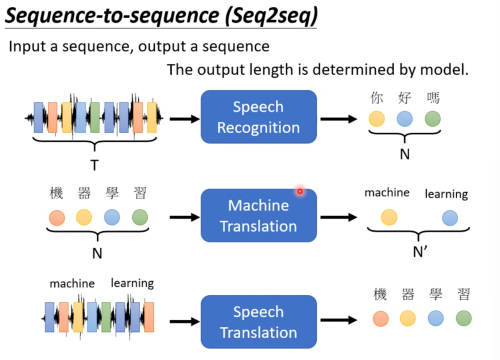
这种类型的模型能做非常多的事情。能在自然语言、音频、图像等领域广泛的应用。具体的例子暂且不展开。
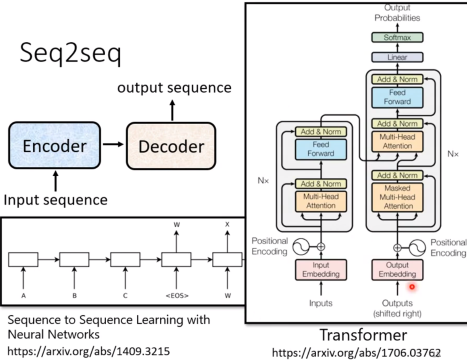
Transformer也是一种Seq2Seq模型，但是它的结构和传统的RNN模型不同。它是基于Attention机制的，而不是RNN。
网络结构
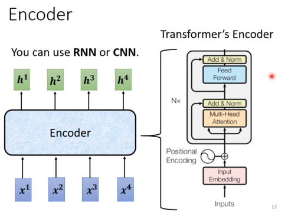
Encoder
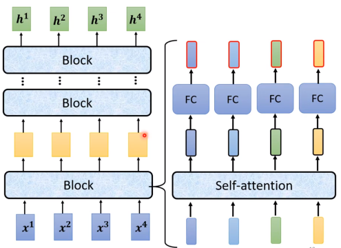
原始的transformer里面encoder更复杂
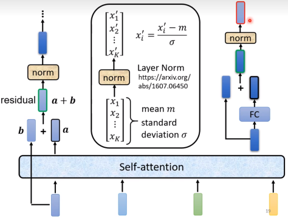
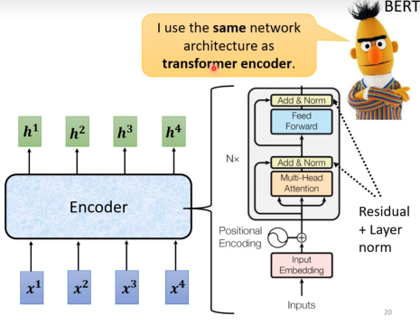
右边就是一个block里面的内容，实际上在encoder中种这样的block会做n次。
Decoder
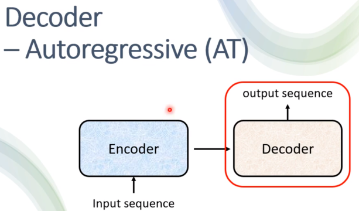
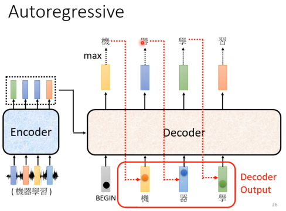
一开始会用BOS作为输入，然后会产生一个输出，然后把这个输出作为下一次的输入，然后再产生一个输出，然后再把这个输出作为下一次的输入，一直这样做下去，直到产生EOS为止。
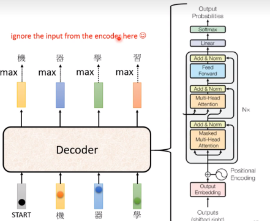
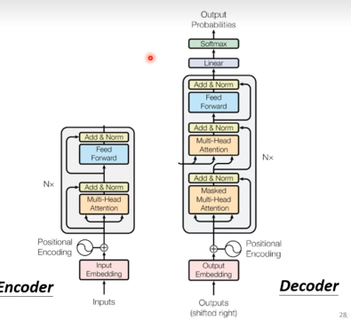
解释一下图中的Masked，实际上Masked就是在self-attention的时候，不让它看到后面的内容。因为在预测的时候，decoder产生的东西是一个一个产生的，后面的内容是不知道的，所以在训练的时候也不应该让它看到后面的内容。
那么什么时候终止呢？
我们设计一个END token，当产生了END token的时候，decoder就终止了。
Decoder Non-autoregressive(NAT)
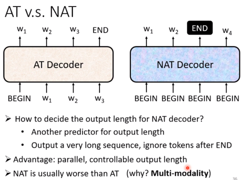
NAT的decoder是可以并行的，因为它不需要等待上一次的输出，它可以直接把encoder的输出拿过来，然后直接做self-attention，然后直接产生输出。
因为NAT不知道要输出多长，于是可以训一个predictor来预测输出长度。或者在第一个END token出现的时候终止。（同时可以利用这一点自由控制输出的长短）
但是NAT一般来说表现劣于AT decoder。NAT的详细部分可以看助教的讲解。
Encoder 和 Decoder 的连接
Inference
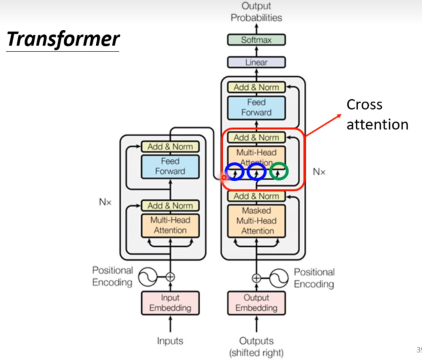
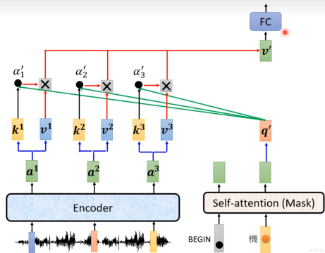
Training
每次产生一个中文字就是一个分类的问题。
尽量使得总的cross entropy最小。
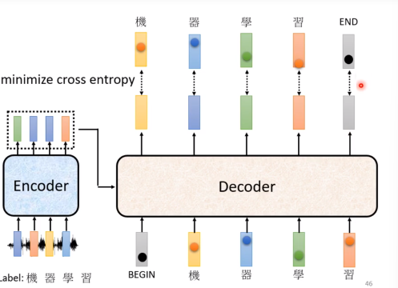
训练的时候，我们会给decoder看正确的输入答案（输入的时候）（Teacher forcing技术）
但是有个问题，当它拿去inference的时候，它不知道正确答案，那么decoder的输入该怎么办？
也就是说测试的时候decoder会看到一些错误的东西。
这个叫作exposure bioas。
给decoder一些错误的东西，让它自己去学习怎么处理错误的东西。Scheduled Sampling（有可能伤害到Transformer并行的能力）
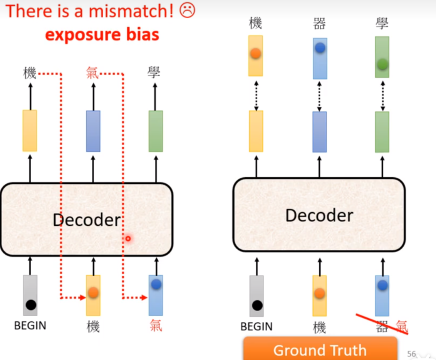
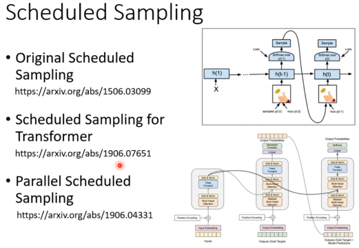
Training tips
Copy Mechanism
有时会机器需要从使用者的输入copy一些输出。
需要训练机器copy内容的能力。（因为需要copy复用的内容，机器没见过，或者不需要机器再用seq2seq的方法一个一个生成）
比如chat-bot，需要复用一些提问的内容。
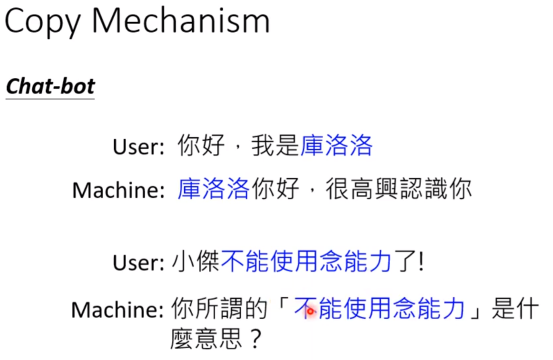
又或者提炼文章摘要，需要从文章里直接复制一些资讯出来。
摘要copy Mechanism这一块有影片资料。
Guided Attention
要求机器在attention的时候，有固定的方式。
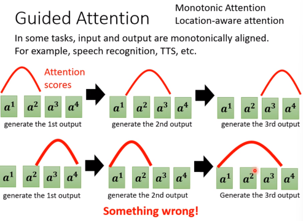
比如语音合成时，我们期望attention是从左到右的，但是实际上attention可能是乱跳的，所以我们可以guide它。（任何有单调性或者方向性的东西我们就可以去guide，依赖domain knowledge）
怎么做到呢?
可惜老师上课没讲。
可以自行了解： Monotonic Attention, Location-aware Attention, etc.
Beam Search
如果每次都贪心的选择概率最高的答案，有可能调入贪心的陷阱，但是暴搜所有路径情况太多。
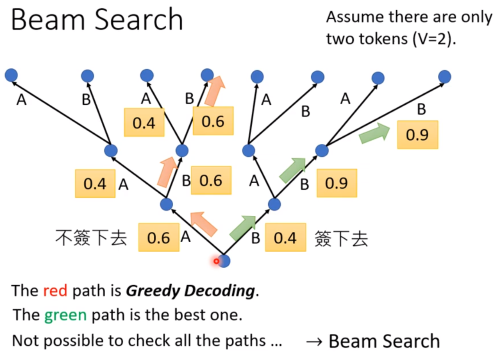
技术细节自行google。
但是也有一些批评的声音。
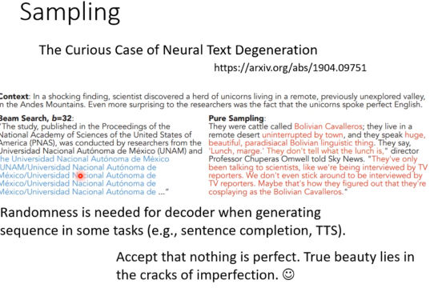
如果用Beam Search 有可能会不断说同一句话，不如加一点随机性，虽然不是最好的答案，但是至少看起来比较正常。
这个还是要看任务本身的特性。
- 如果任务答案很明确，beam search就很好用。
- 需要一些创造力的时候，不只一个答案时，需要一些随机性。（更有甚至，在推理的时候需要加入杂音，效果还会更好，完美的东西不符合人类认知，不完美反而更容易理解？） Accept that notion is perfect. True bearuty lies in the cracks of imperfection.
Optimizing Evaluation Metric
训练的时候用cross entropy，但是评估的时候用BLEU。但是最小的cross entropy不一定是最大的BLEU。（BLEU是按照句子和句子比较的score）
但是BLEU无法微分，一般用RL来优化BLEU。（但是比较麻烦）